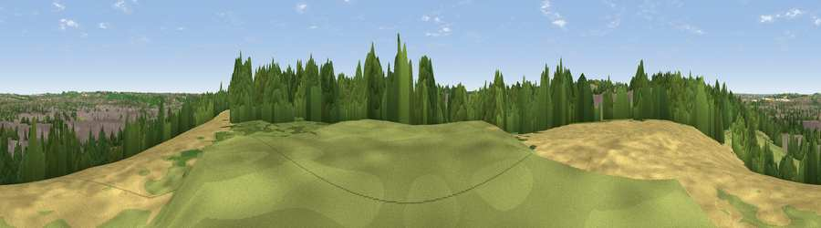

Viewpoint near Chaul End
#34636 in England · top 55% of its area beats it · near Chaul EndThe view, rendered

A 360° render of this exact spot computed from the terrain model, tree cover and land cover — summer colours, afternoon light, calibrated against photographs of famous viewpoints. Real trees, hedges and buildings will differ in detail.
The panorama
Grey silhouette: terrain skyline in each direction (720 bearings, Earth curvature and refraction included). Dashed green: skyline with trees (+15 m) and buildings (+8 m) as obstacles. Blue strip: how far the ground is visible on each bearing.
Where the view opens
Wedge length = distance to the farthest visible ground on that bearing (vegetation-aware). Rings at 10, 25 and 50 km.
What fills the view
30% built-up · 28% woodland · 25% cropland · 16% grassland
Angular shares of the visible panorama (visual magnitude), not map area. Landscape diversity 0.59 (0–1 Shannon).
Key numbers
More beautiful places nearby
The staircase of upgrades: each row has a higher view potential than everything closer. Driving times are estimates from straight-line distance, calibrated against real road routing — check an actual route before setting out.
| Place | Direction | Drive | Score |
|---|---|---|---|
| Viewpoint near Chaul End | WNW · 1 km | ~3 min | 42.9 |
| Viewpoint near Chaul End | WNW · 2 km | ~6 min | 53.4 |
| Viewpoint near Dunstable | W · 3 km | ~7 min | 55.3 |
| Viewpoint near Church End | W · 6 km | ~12 min | 65.8 |
| Beacon Hill | WSW · 11 km | ~21 min | 74.1 |
| Viewpoint near Halton | WSW · 21 km | ~35 min | 74.3 |
| Coombe Hill Monument | WSW · 26 km | ~41 min | 75.5 |
| Viewpoint near Woolstone | WSW · 84 km | ~108 min | 76.7 |
51.87994, -0.45893 · source: screening · position refined by local search. Computed location — check access rights before visiting.